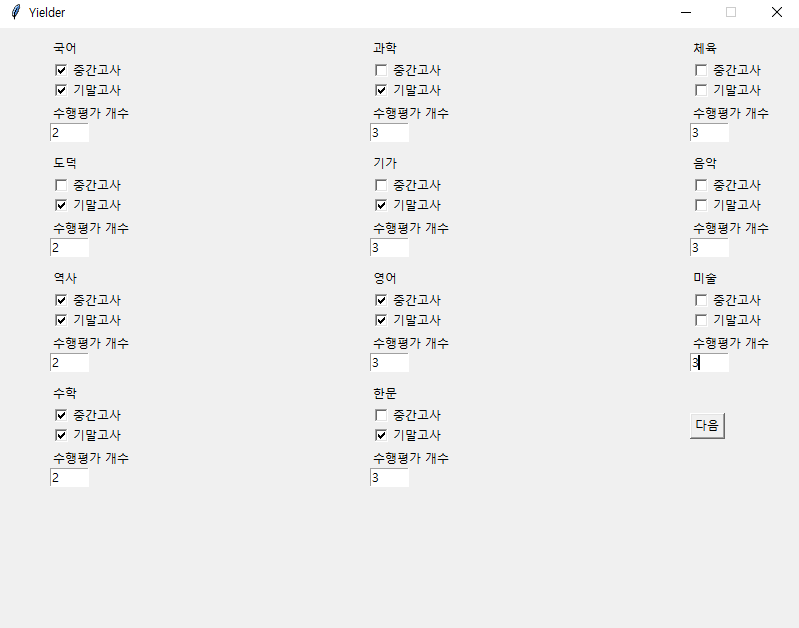

'시작하기' 버튼을 눌러 시작합니다.
아래 그림과 같이 입력합니다.
'넘어가기' 버튼을 누릅니다.
각 평가에서 자신이 받은 점수를 입력합니다.
수행평가 점수는 아래 표에 나오는 순서대로
입력하고 띄어쓰기는 사용 하지않으며
쉼표(,)로만 구분합니다.
예) [98점, 76점, 54점] 입력: 98,76,54
| -과목- | |
|---|---|
| 국어 | 한 권 책 읽기, 국어 안내 책자 만들기 |
| 도덕 | 북한 여행 광고, 통일 신문 제작 |
| 역사 | 인물 보고서 쓰기, 세계대전 비주얼씽킹 |
| 수학 | 삼각형 내심과 외심 프로젝트, MATH 포트폴리오 |
| 과학 | 수권과 해수의 순환 탐구, 비열과 열팽창 탐구, 물질의 특성과 혼합물의 분리 탐구 |
| 기술•가정 | 섬유 포트폴리오, 가족 신문 만들기, 제조 기술 포트폴리오 |
| 영어 | 영어듣기, 말하기 시험, 러닝저널 |
| 한문 | 한자 활용 시짓기, 한문 미니북 만들기, 한자어 활용 포트폴리오 |
| 체육 | 배구, 좌전굴, 스포츠맨쉽 |
| 음악 | 핸드벨 연주, 음악 감상, 음악사 워크북 |
| 미술 | 와이어 드로잉, 명화 협동화, 스텐실로 표현하기 |
모든 점수 입력이 끝났다면, '완료' 버튼을 누르고
'끝내기' 버튼을 누른 다음 프로그램을 종료합니다.
'yielder' 폴더에 있는 '산출하기.exe'를 실행합니다.
'결과보기' 파일을 더블클릭하여 학기 최종 점수를 확인합니다.